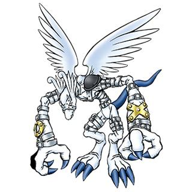

滴水嘴兽 ガーゴモン Gargomon

基本资料
必杀技＆得意技
| 白色雕像 | White Statue | ホワイトスタチュー |
设定资料
用「光之数码精神」力量进化而来的装甲体魔兽型数码兽。原本是恶魔系数码兽，但被拘束具抑制了力量，被天使型数码兽作为使魔驱使着。据说当其从拘束具的控制中解放出来时候，能发挥惊人的力量。必杀技是召唤巨大的恶魔胸像攻击敌人的「白色雕像」。
“光のデジメンタル”のパワーによって進化した、アーマー体の魔獣型デジモン。元来、悪魔系デジモンであったが、拘束具でその力を抑えられ、天使型デジモンの使い魔として使役されることがある。その拘束具による制御から解き放たれたとき、凄まじい力を発揮すると言われている。必殺技は巨大な悪魔の胸像を召還し、敵を攻撃する『ホワイトスタチュー』。
注释 References
- 在卡片游戏中等级为IV，即「成熟期」。
- 在卡片游戏中属性为「病毒」。
- Gargoyle，滴水嘴兽，又称雨漏。是建筑输水管道喷口终端的一种雕饰。它一般是雕刻成动物或鬼怪模样，作用在于把屋顶上流下来的雨水通过嘴上的空排出，以免雨水沿着建筑物的墙壁流下来。俗称石像鬼。